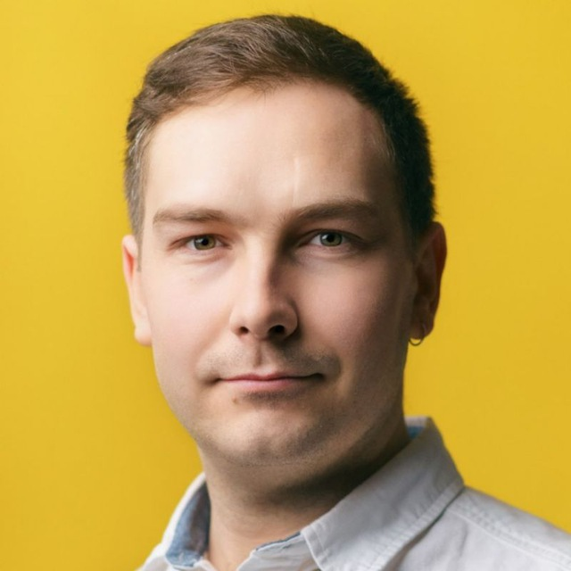

Alexey Vavilin
Senior Rust & Systems Engineer
Batumi, Georgia · Open to relocation
I build fast, data-heavy backends. 15 years in software, 7+ of them in Rust. I'm at my best when a working system hits its limits: I dive in, measure everything, and tune it until it performs.
Profiles & focus
- Performance engineeringProfiling and deep optimization: throughput, latency, memory, disk I/O.
- Systems programmingRust, C/C++, low-level code, from OS drivers to high-load services.
- Data-intensive backendsPipelines, indexers, storage, and task orchestration on PostgreSQL, Kafka, RocksDB.
- Blockchain infrastructureNode components, SDKs, and data processing for TON and Filecoin.
- AI-assisted developmentI use Claude Code, Cursor, and Codex every day: I set the task and the design, review the result, and spend my time on decisions and verification.
- Learning new thingsI love picking up new technologies and domains, and AI makes that faster and more fun.
Stack
- Rust
- Go
- Python
- C/C++
- PostgreSQL
- RocksDB
- Kafka
- Docker
- Kubernetes
- WASM
Open to
Senior backend roles on performance-critical, data-intensive products. Rust is where I feel most at home, but I'd happily work in Go or Python too.